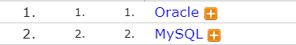

사이트 업데이트 내용
- 오라클 데이터베이스 설명과 제작을 위한 첫 게시판 제작2020.11.25
- 이 게시판은 오라클 데이터베이스에 대한 설명과 기타 예제 및, 데이터 베이스 관련된 핵심적인 부분을 짚기 위한 사이트로 제작되었습니다.2020.11.25
- 사이트 제작 개요2020.11.25
- 사이트를 제작하게 된 계기와 사이트의 전체적인 구성 및 틀과 그 틀에대한 설명 및 전체 HTML 레이아웃, CSS 스타일에 대한 설명2020.11.25
- 사이트의 최종 업데이트와 추가내용2020.11.25
업데이트 날짜
2020-11-26
데이터베이스 1위 오라클
 현재 데이터베이스 시장 점유율 보러가기오라클

기타 관계형 데이터베이스


높은성능 (Improved Performance)
오라클 데이터베이스는 트랜잭션 처리에 데이터베이스 성능 향상을 위한 전략을 제공합니다.
애플리케이션 클러스터 기능으로 지속적인 정보 파악을 위해 여러 서버를 사용하며, 프로세스 능력을 높입니다.
상세정보
다재다능 (Versatility)
오라클 데이터베이스는 모든 OS에서 전용언어를 제공하여, 특정 운영체제를 호환할 수 있습니다.
또한 이전 버전과의 호환도 가능하여 정보 손실없이 업그레이드를 지원합니다.
상세정보
기능성 (Functionality)
오라클 데이터베이스는 대부분의 기업 수준의 애플레이케이션에 사용되며, 대부분의 은행 시스템에 적용됩니다.
이는 높은 수준의 기술과 통합된 비즈니스 솔루션을 제공하며, 많은 데이터를 필요로 하는 회사에 이상적입니다.
상세정보
신뢰성 (Reliability)
오라클 데이터베이스는 데이터 스토리지의 높은 수준의 무결성을 제공함으로 써, 안정성을 확보하며,
이를 통해 신뢰할 수 있는 데이터를 저장할 수 있습니다.
상세정보